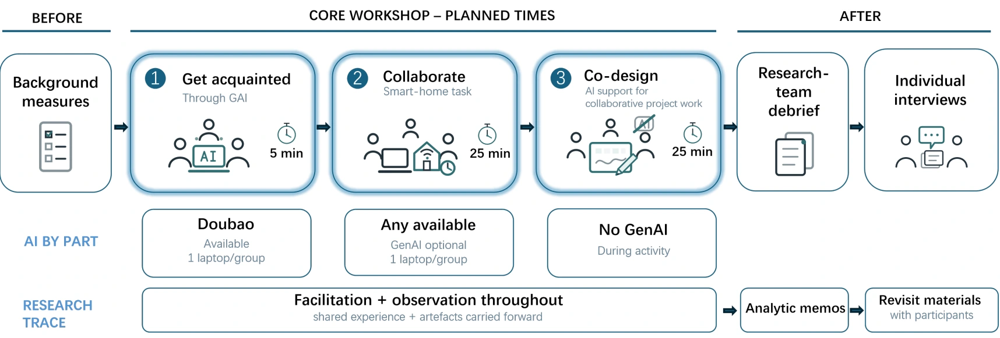
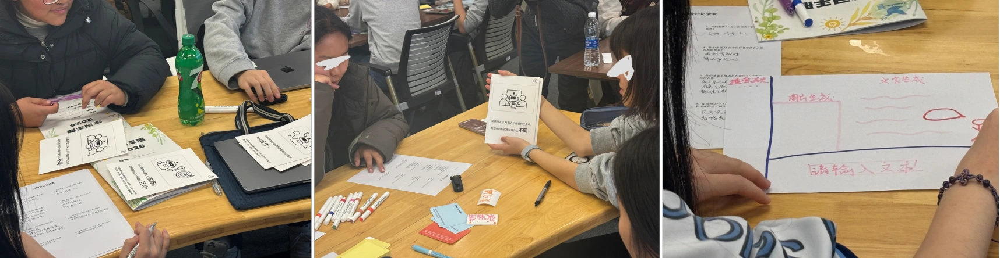

2026 / Co-design and collaborative learning
Participation around GenAI in Group Learning
Study completed · Manuscript under review
A group can share an AI interface without sharing influence over what it does. When students use generative AI together, who gets to frame the question, decide which suggestions matter, and shape the work that follows? This project examines participation around shared GenAI in secondary-school group work, looking beyond access to the interface and completion of a group artifact.
We worked with 27 students aged 12–18 from Beijing and Tibet in six groups during a cross-regional workshop in China. Each group shared one laptop for introductory activities and a smart-home design task, with GenAI use optional. Students then used reflection cards, discussion cards, and worksheets to co-design future AI support without using GenAI. Interviews with 15 students and six teaching assistants formed the main basis of our analysis, contextualized by workshop records and artifacts.

In some groups, generated suggestions supplied a direction before students had developed a shared understanding of the problem. Collaboration continued, but became organized around selecting, refining, and producing from that direction. Other groups discussed their own ideas first and used GenAI to expand or check them. Both approaches could produce a presentation, while offering different opportunities to understand and question the reasoning behind it.
Operating the interface was a consequential position. The person typing could decide which ideas entered a prompt and which responses returned to the group. Familiarity, typing speed, confidence, and proximity to the screen affected who took this role. Yet one operator did not necessarily mean one decision-maker: some groups kept prompts open to agreement and invited contributions from members who were not typing. The distinction was whether interface operation represented collective discussion or concentrated influence.
Students often explained reliance on AI and narrower peer involvement through the same concern: making progress within limited time. Co-design opened up alternatives, including parallel input, larger shared displays, and help articulating incomplete ideas. But participants differed over how far AI should coordinate the group. Some valued additional routes into participation; others wanted peers to retain responsibility for speaking, listening, and responding to one another.

The study distinguishes access, input, uptake, and influence: seeing the interface or expressing an idea does not establish that others engage with it or that it affects a decision. This suggests designing routes from individual contributions back into collective review, and allowing groups to negotiate AI involvement. Supporting participation also requires time for that review. These are directions for design and evaluation, rather than evidence that more AI mediation would improve collaboration.
My contribution
I led workshop design and developed the research materials, co-organized the workshop, collaborated on qualitative analysis, and contributed to manuscript writing.